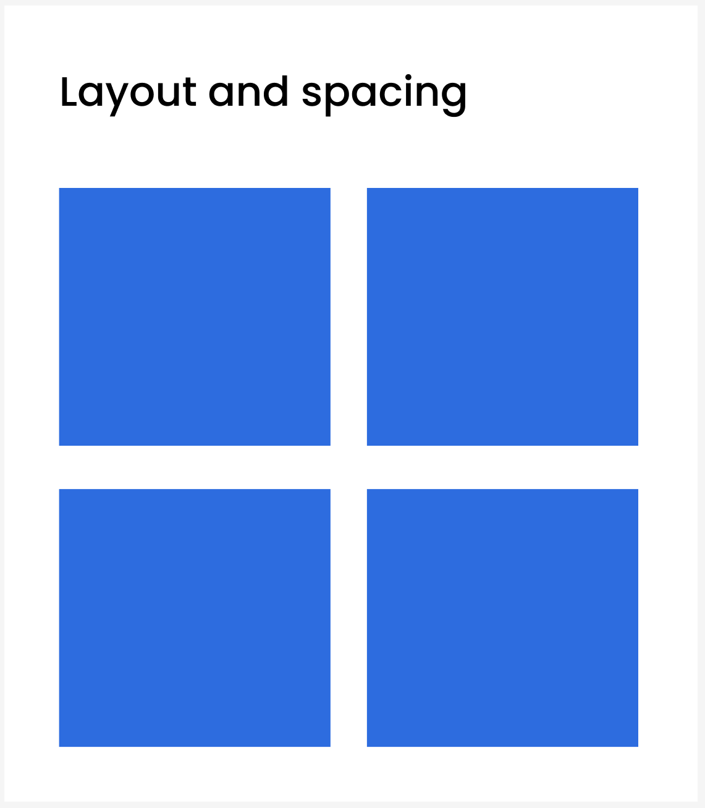

STYLE GUIDE
This page showcases core design components used in the Youth Engagement website, including layout, color palette, and typography.
Typography
We use the Poppins font family in 400, 600, and 700 weights to ensure clarity and hierarchy. The font is clean, modern, and supports multilingual readability. Font sizes are responsive and follow a modular scale.
h1- 2rem, boldh2- 1.5rem, semi-boldp- 1rem, regular
Accessibility Note: Fonts meet WCAG 3.1.1 readability level, and sufficient size is used for body text (16px+).
Color Palette
Primary blue (#2D6CDF) is used for headings and key CTAs. Accent red (#FF6B6B) signals interaction. Background white and light grey improve contrast.
Accessibility Note: Text over colors maintains a contrast ratio of 4.5:1+ (checked via WebAIM tools).
Layout & Spacing

Layout is designed mobile-first using Flexbox. Spacing
utilities like .m-y-2 and
.p-x-3 help maintain consistent rhythm and
readable visual hierarchy.
.m-y-2→ 1rem vertical margin.p-x-3→ 1.5rem horizontal padding
Accessibility Note: Adequate spacing improves readability and tap target separation (WCAG 2.5.5).
✨ UI Button Components
These buttons follow our accessibility, contrast, and interaction design principles. Primary buttons are used for main actions, while secondary buttons offer alternate paths.
Mockup: Button styles with hover/focus states.
UI Components
Button
Accessibility Note: Buttons have
visible focus states and clear labels.
<button> is used instead of
<div>.
Form Example
Accessibility Note: Forms use explicit labels and ARIA attributes where needed (WCAG 3.3.2).
Image Usage

Images are used to emotionally connect with users. Every
image includes descriptive alt text to
ensure compatibility with screen readers.
Accessibility Note: Meets WCAG 1.1.1 non-text content requirement.
Typography
We use the Poppins font family across all pages with 400, 600, and 700 weights.
Color Palette
Primary: #2D6CDF, Secondary: #F9F9F9, Accent: #FF6B6B.
Layout Strategy
Mobile-first layout using flexbox with spacing helpers like .m-y-2 and .p-x-3.